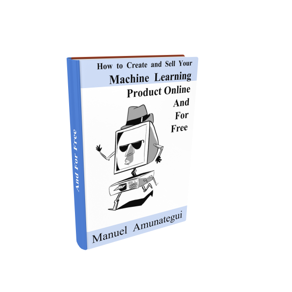

We Can All Be Internet Moguls — How to Create and Sell Your Machine Learning Product Online and For Free
Resources

Source: Lucas Amunategui
Once you get a taste, once you get an understanding of how easy it is to get something out there you will be hooked.
It blows me away how the cost of tools to be a weekend entrepreneur has come down to earth. We are not witnessing the democratization anymore, it’s finally democratized.
Signup HERE and receive the free eBook and class today!
Machine Learning Web Applications
I’m talking about a particular type of entrepreneurship, the machine-learning-driven, web-application type.
This is where you take your machine learning script, a model that transforms data into actionable intelligence, augment it by deploying it onto the Internet. In turn, anybody, far and near, young and old can intuitively tweak its parameters without knowing statistics, Python or machine learning and get potentially life-altering, dynamic results, custom-tailored to their needs.
This isn’t something we’ve seen much of in the past unless it was driven by some beefy, compiled programming hidden behind a REST API service, either way, it was more-than-likely not free or it was heavily subsidized by advertising.
This isn’t the case anymore, things have changed. Along with the great open source programming languages like R and Python, we now can easily extend scripts to the web and to the entire planet. We are entering the era where the machine-learning, weekend entrepreneur can imagine, test, and share prototypes quickly, simply and, if you’re crafty, for free.
This is obliterating the barrier to entry for both entrepreneurs and the web users. We all win.

We can now test out hundreds of ideas and see if any stick, risk-free.
{% include follow-me.html %}My New Free eBook
To celebrate this, I put together a free eBook for those wanting to try it out for themselves. In it, we’ll build a stock market predicting tool, extend it into a web application and finally deploy it onto the cloud. All this for free. We’ll even experiment with some monetization options such as taking credit card payments with Stripe or PayPal donations.
If you want to receive it, sign up and I’ll send you the link to the PDF, along with the free videos for those that are more visual (like me):
https://create-your-own-web-apps.gr8.com/But Don’t Dilly-Dally
For the urgency part, the window of opportunity may seem wide open now but it won’t be that way forever. The large behemoths are still battling it out to grab as much of the big data of the world, once that dust settles, they’ll go after the little people, the weekend entrepreneurs, us. So don’t dilly-dally.
Are you ready to give birth to your digital product? Are you sure? This is an important step, few come back from this. Once you get a taste, once you get an understanding of how easy it is to get something out there you will be hooked. You will question others around you who have either failed or have needed an armada of employees to get things going. Sign up for the eBook and start building.
Thanks for reading!
Manuel Amunategui
Author: Monetizing Machine Learning, Curator of amunategui.github.io and ViralML
{% include mid_point_ad.html %}